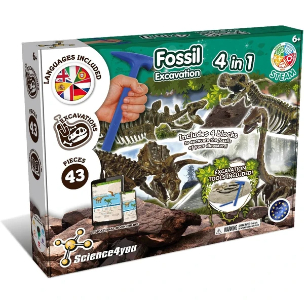
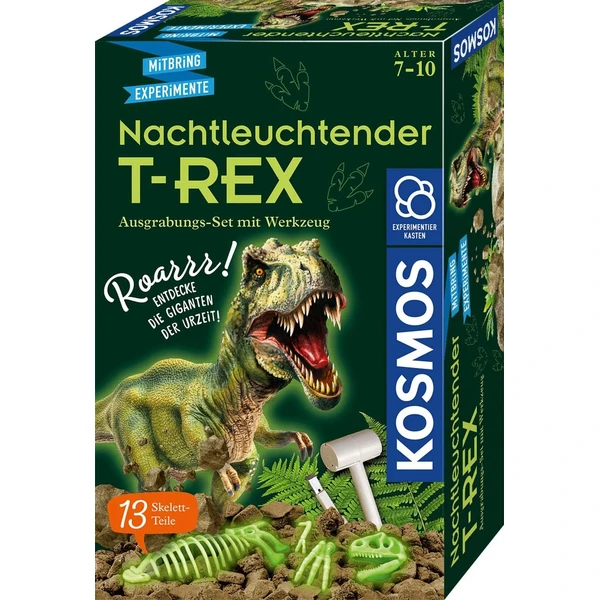
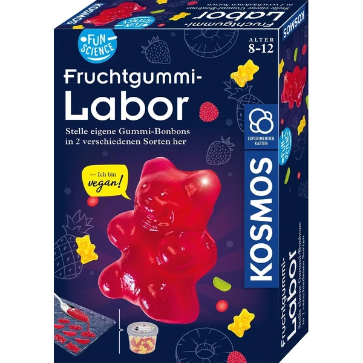
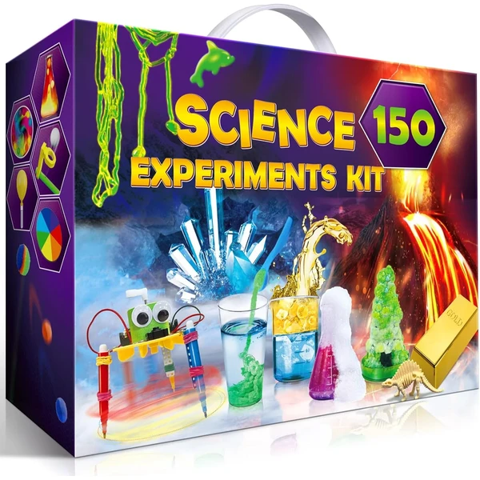
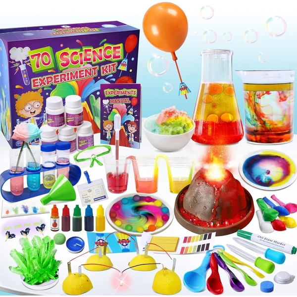
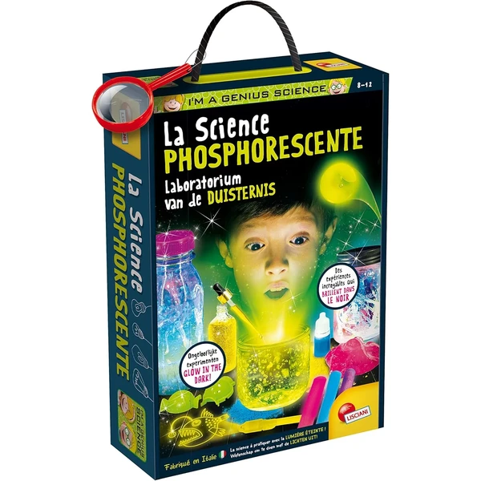
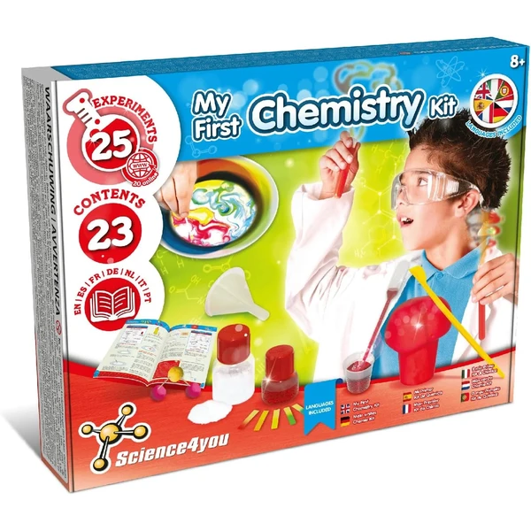
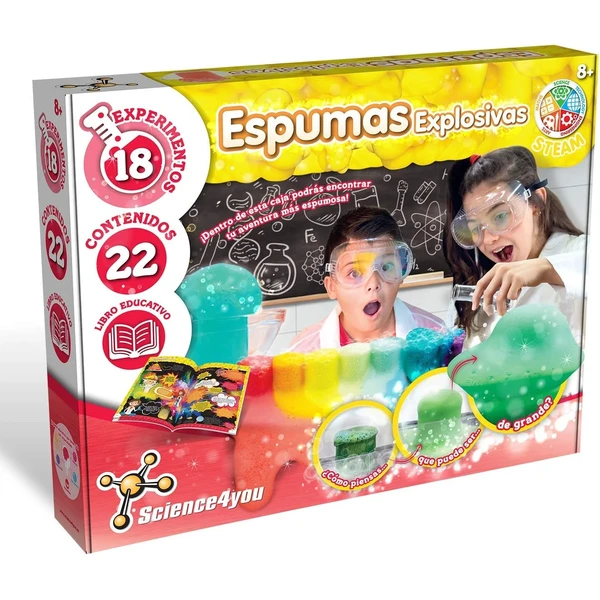
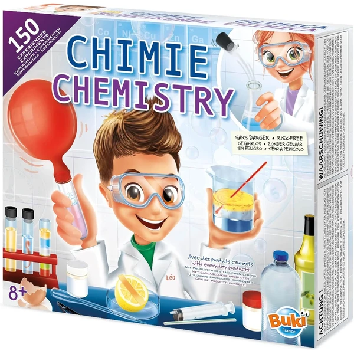

A los 8 años los kits de ciencia permiten experimentos con hipótesis propias: el niño predice qué va a pasar antes de comprobarlo, acercándose de forma natural al método científico. Temas como la física básica, la electricidad o la química sencilla despiertan mucho interés en esta etapa, sobre todo si se explican con ejemplos cercanos. En esta selección encontrarás juegos de ciencia pensados para esta edad.
¿Qué desarrollan los juegos de ciencia a los 8 años?
Predecir un resultado antes de comprobarlo es el corazón del método científico, y a esta edad ya resulta muy natural.
- Pensamiento crítico
- Curiosidad
- Observación
- Concentración
- Vocabulario
- Experimentación

National Geographic Kit de Ciencia
Un kit muy completo con más de 15 experimentos distintos: cultivo de cristales, un volcán en erupción, dos excavaciones geológicas y piedras naturales para clasificar. Ideal para pasar varias tardes explorando la ciencia.
⭐ ¿Por qué nos gusta?
- ✔ Más de 15 actividades distintas.
- ✔ Incluye excavaciones y cultivo de cristales.
- ✔ Guía de aprendizaje detallada incluida.
💬 Lo que más destacan las familias
Muchos padres coinciden en que la variedad de experimentos es lo que más engancha, porque nunca se acaba haciendo lo mismo. También se valora que las instrucciones sean claras, así los niños pueden avanzar solos sin frustrarse.
Ver en Amazon

UNGLINGA Laboratorio de Química
Un set de disfraz y herramientas de laboratorio para que los niños se conviertan en pequeños científicos. Incluye bata, tubos de ensayo, cuentagotas y tarjetas de actividades paso a paso.
⭐ ¿Por qué nos gusta?
- ✔ Incluye bata y herramientas de laboratorio reales.
- ✔ Tarjetas de actividades paso a paso.
- ✔ Combina juego de rol y aprendizaje científico.
💬 Lo que más destacan las familias
Una de las cosas más comentadas es lo mucho que gusta ponerse la bata y sentirse un científico de verdad. Los padres valoran también que las tarjetas guíen la actividad sin necesidad de estar pendientes todo el rato.
Ver en Amazon

Science4you Excavaciones Fósiles 4 en 1
Un kit para excavar 46 piezas y construir los fósiles de cuatro dinosaurios distintos, con herramientas de arqueología incluidas. Incluye libro educativo sobre la extinción de los dinosaurios.
⭐ ¿Por qué nos gusta?
- ✔ 46 piezas para construir cuatro fósiles.
- ✔ Incluye herramientas reales de excavación.
- ✔ Libro educativo sobre dinosaurios.
💬 Lo que más destacan las familias
Entre los comentarios más habituales aparece lo entretenido que resulta el proceso de excavar cada pieza, casi como un juego de paciencia. Los pequeños amantes de los dinosaurios suelen pedir repetir la experiencia varias veces.
Ver en Amazon

Kosmos T-Rex Excavación
Un kit para descubrir un esqueleto de T-Rex de 13 piezas que brilla en la oscuridad, escondido en un bloque de yeso. Incluye martillo, cincel e instrucciones a color sobre dinosaurios y fósiles.
⭐ ¿Por qué nos gusta?
- ✔ Esqueleto de T-Rex que brilla en la oscuridad.
- ✔ Incluye martillo y cincel de excavación.
- ✔ Información sobre dinosaurios y fósiles.
💬 Lo que más destacan las familias
Se repite bastante el comentario de que el detalle de que el esqueleto brille en la oscuridad sorprende mucho una vez montado. Es un kit que suele gustar especialmente en fiestas de cumpleaños con varios niños excavando a la vez.
Ver en Amazon

Kosmos Laboratorio de Gominolas
Un kit para crear gominolas veganas caseras con distintos sabores y formas, explicando de forma sencilla cómo funcionan los agentes gelificantes. Ideal para combinar ciencia y cocina en una misma actividad.
⭐ ¿Por qué nos gusta?
- ✔ Permite crear gominolas caseras veganas.
- ✔ Explica la ciencia detrás de la gelificación.
- ✔ Dos sabores distintos para elegir.
💬 Lo que más destacan las familias
Lo que más suele gustar es poder comerse el resultado del experimento, algo que no pasa con otros kits de ciencia. Las familias destacan que es una forma original de acercar la química a la cocina de casa.
Ver en Amazon

UNGLINGA 150 Experimentos
Un kit con 150 experimentos distintos sobre tierra, química y física, con instrucciones ilustradas paso a paso. Incluye la mayoría de herramientas y materiales necesarios para empezar sin complicaciones.
⭐ ¿Por qué nos gusta?
- ✔ 150 experimentos distintos en un kit.
- ✔ Instrucciones ilustradas paso a paso.
- ✔ Incluye la mayoría de materiales necesarios.
💬 Lo que más destacan las familias
Una característica muy mencionada es la cantidad de experimentos incluidos, que da para muchísimas tardes distintas sin repetir. Los padres valoran también que las instrucciones sean fáciles de seguir sin ayuda extra.
Ver en Amazon

Science4you Química 600
Un kit con 25 experimentos químicos seguros, desde mensajes secretos hasta explosiones de colores. Incluye una amplia gama de instrumental de laboratorio y sustancias certificadas.
⭐ ¿Por qué nos gusta?
- ✔ 25 experimentos químicos seguros.
- ✔ Amplio instrumental de laboratorio incluido.
- ✔ Mensajes secretos y explosiones de color.
💬 Lo que más destacan las familias
Los compradores valoran especialmente que los experimentos sean vistosos sin dejar de ser seguros para hacer en casa. El de los mensajes secretos suele ser uno de los que más repiten los niños.
Ver en Amazon

UNGLINGA 70 Experimentos
Un kit con 70 experimentos distintos, desde un volcán en erupción hasta un cohete de globos o circuitos con fruta. Incluye manual ilustrado con explicaciones sobre cada reacción.
⭐ ¿Por qué nos gusta?
- ✔ 70 experimentos distintos incluidos.
- ✔ Manual ilustrado paso a paso.
- ✔ Incluye volcán, cohete y circuitos de fruta.
💬 Lo que más destacan las familias
No es raro encontrar comentarios sobre lo bien que combina cantidad y variedad de experimentos en un mismo kit. Se destaca también que el manual explica el porqué de cada reacción, no solo los pasos a seguir.
Ver en Amazon

Lisciani Ciencia Fosforescente
Un laboratorio de experimentos centrado en reacciones que brillan en la oscuridad, ideal para hacer ciencia con un punto visual muy llamativo. Pensado para explorar la química de una forma distinta a los kits habituales.
⭐ ¿Por qué nos gusta?
- ✔ Experimentos que brillan en la oscuridad.
- ✔ Enfoque visual distinto a otros kits.
- ✔ Actividades pensadas para esta edad.
💬 Lo que más destacan las familias
Un detalle que aparece una y otra vez es el efecto sorpresa de ver los experimentos brillar al apagar la luz. Es un kit que suele convertirse en el favorito para hacer con las luces apagadas.
Ver en Amazon

Science4you Química Explosiva
Un kit con 25 experimentos de química, desde crear estalactitas y estalagmitas hasta escribir mensajes secretos con limón. Incluye libro educativo con explicaciones sobre cada reacción.
⭐ ¿Por qué nos gusta?
- ✔ 25 experimentos de química distintos.
- ✔ Crea estalactitas y estalagmitas caseras.
- ✔ Libro educativo con explicaciones claras.
💬 Lo que más destacan las familias
Se repite bastante el comentario de que ver crecer las estalactitas y estalagmitas es de los experimentos que más engancha. También se valora que el libro explique bien el porqué de cada reacción química.
Ver en Amazon

Science4you Espumas Explosivas
Un kit con 18 experimentos para crear espumas explosivas de distintas texturas y colores con limón, vinagre y colorantes. Incluye libro educativo sobre la ciencia de las explosiones espumosas.
⭐ ¿Por qué nos gusta?
- ✔ 18 experimentos de espumas explosivas.
- ✔ Distintas texturas y colores para probar.
- ✔ Libro educativo incluido en español.
💬 Lo que más destacan las familias
Quienes lo han probado destacan lo espectacular que resulta ver crecer la espuma con cada mezcla, algo que engancha especialmente a los más pequeños de la casa. También se valora que los materiales sean fáciles de conseguir para repetir el experimento.
Ver en Amazon

Buki Química 150 Experimentos
Un kit con 150 experimentos químicos seguros, usando ingredientes cotidianos como vinagre, aceite o bicarbonato. Incluye matraz de vidrio, tubos de ensayo y gafas de protección para un laboratorio casero completo.
⭐ ¿Por qué nos gusta?
- ✔ 150 experimentos químicos sin riesgo.
- ✔ Incluye material real de laboratorio.
- ✔ Instrucciones ilustradas paso a paso.
💬 Lo que más destacan las familias
Se repite bastante el comentario de que incluir material de laboratorio real, como el matraz de vidrio, hace que la experiencia se sienta más auténtica. Los 150 experimentos ofrecen contenido de sobra para muchas tardes distintas.
Ver en Amazon